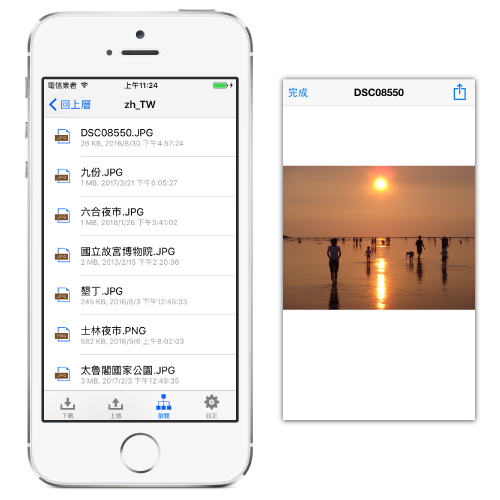

設定簡單
操作容易
Filelug 服務的設定非常簡單，只需要手機號碼，就能讓你的行動裝置連線到你的辦公室或家裡的電腦！ 您不需要購買額外的硬體設備、不需要知道內部或對外的網路IP位置、也不需要系統管理員協助調整相關網路設定。

跨越裝置
隨傳隨看
Filelug 服務可使用於多種電腦裝置，讓你的手機與電腦零距離，檔案隨傳隨看。 手機端安裝的 Filelug App，提供了 iPhone 與 iPad 版本，及 Android 手機與平板版本。 電腦端安裝的 Filelug Desktop 應用程式，提供了 Windows、Mac 及 Linux 三種版本。
檔案安全
多重防護
Filelug 服務針對檔案傳輸的安全性，提供了三重防護。 第一重，使用手機號碼登入，系統發送簡訊以確認手機號碼是用戶本人持有。 第二重，傳輸時進行資料加密，避免駭客側錄窺視檔案內容。 第三重，檔案只會停留在電腦或是手機，其餘任何地方都不留暫存檔案，杜絕第三方外洩資料的機會。